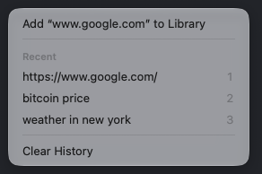
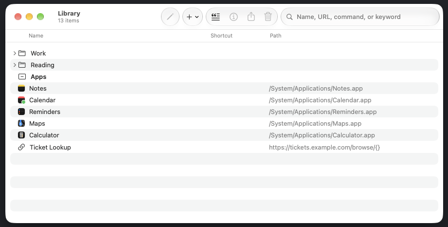
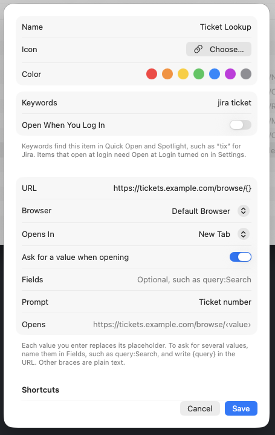
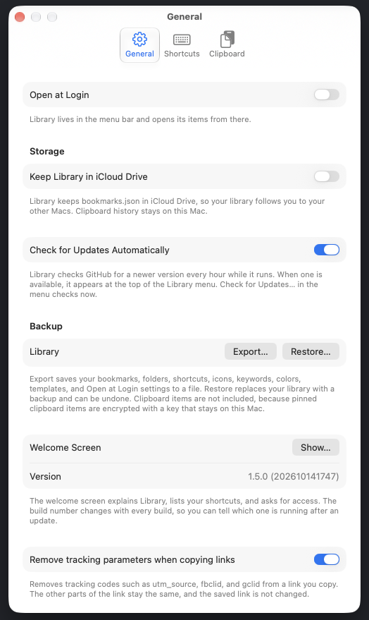

Library
Everything you open and copy, one shortcut away.

Find anything with Control-Space.
Press Control-Space from anywhere and type a few words from a name, keyword, URL, or folder. Press Return to open the result, or Tab for other ways to use it.
- Type or paste a web address to open it, or add it to your library.
- Press ⌘1 through ⌘9 to open the first nine results.
Everything in the menu bar.
Click the Library icon to open your bookmarks, apps, folders, and recent copies, or to edit your library. Hold Option while you click to open an item the other way.

Your clipboard, remembered.
Library remembers what you copy, including text, links, images, and files, in every format you copied them in.
- Pin an item to keep it after you quit.
- Select an item in Quick Open and press Space to preview it in Quick Look.
- Build a paste queue: add several items, then paste them one at a time, in order.
- Copy as lower or upper case, trimmed, with its lines joined, or with smart punctuation. Copy a bookmark as a Markdown link.
- Type
from Safariin Quick Open to see only what you copied in Safari.

Smart actions for what you copy.
Text with an address, a phone number, or a date gets actions in Quick Open, under Tab. Detection happens on this Mac.
- Addresses: Open in Maps.
- Phone numbers: Copy Phone Number.
- Dates: Add to Calendar.
- Smart Punctuation: copy text with smart punctuation from Quick Open, under Tab.
Snippets for text you type often.
Keep an address, a standard reply, or any other text you use again. Add one from File > New Snippet… or the Snippets button in the Library window. Find it by name or keyword in Quick Open, then press Return to copy it.
Snippets are plain text and not encrypted, so don't keep passwords in one.
Organize your library in one window.
Choose Edit Library… to manage folders, bookmarks, apps, and terminal commands together. Select several rows to move or edit them at once, and undo changes with ⌘Z.
- Find and merge duplicate bookmarks from File > Find Duplicates….
- Import bookmarks from Safari or Chrome with File > Import Bookmarks…. They go into one folder, and ⌘Z undoes the import.
- Open a folder to open all of its bookmarks and apps at once.

Get Info, with notes and templates.
Press ⌘I on any item to set its name, icon, URL or command, keywords, color, and shortcuts. Put {} in a URL where a value goes, and Library asks for it each time you open the bookmark.

Read later, and write things down.
Add a bookmark to the Reading List from its right-click menu, or from Tab in Quick Open. Unread bookmarks show first, and removing one from the list keeps it in your library.
- Write a note on any item in Get Info. Quick Open shows the note under the item's name.
Settings that fit how you work.
Press ⌘, to open Settings. General holds startup, iCloud Drive, updates, backup and restore, and link cleaning. Shortcuts sets the global keys, and Clipboard controls history and pasting.

Your library stays on your Mac.
Library keeps your library and clipboard history on your Mac. Pinned clipboard items are encrypted with a key kept in your Keychain. Library skips anything a password manager marks as private.
- The app connects to the internet only for site icons, update checks, and the optional link checks and copied GIFs you can turn on in Settings.
- Require Touch ID or password to show pinned items, in Settings > Clipboard.
Read the privacy guide for exactly what is stored and sent.
Install in one command.
Paste this into Terminal. It builds Library and installs Library.app in your Applications folder.
git clone https://github.com/deansasek/library.git "$HOME/Library/Application Support/Library/Source" && "$HOME/Library/Application Support/Library/Source/install.sh"Requires macOS 26 or later, and the Xcode Command Line Tools.
Library checks for updates itself, and Check for Updates… installs them. Your library and clipboard history are kept.